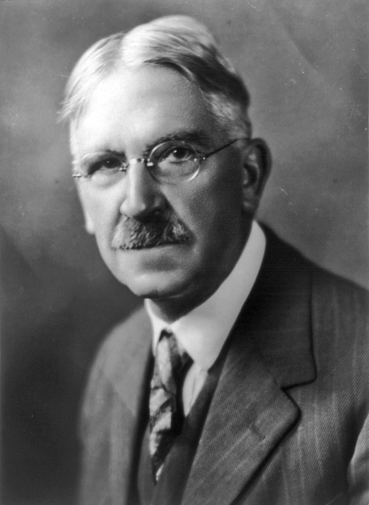
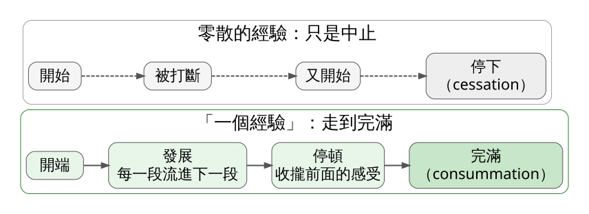
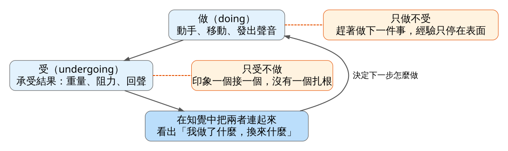
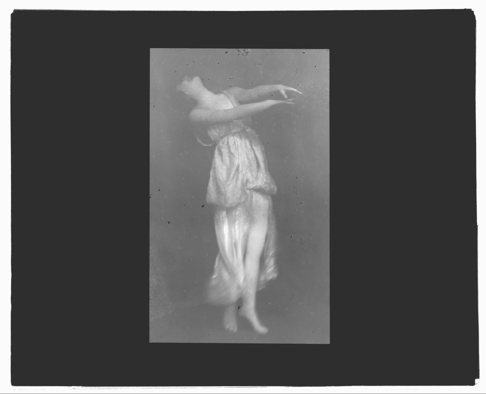

Dewey 在 1934 年的《Art as Experience》主張：畫布、建築、舞台上的動作只是「藝術產品」，真正的藝術作品是這個產品在人的經驗裡起的作用；而一段經驗只要從開端一路發展到完滿，就已經帶有審美的性質。今天要練習分辨兩種經驗：做到一半就斷掉的，和走完全程、能讓人說出「那真是一次經驗」的。
史料 1931 年冬天到春天，John Dewey 受邀在哈佛大學講了十場關於藝術哲學的演講。這個講座是為紀念 William James 設立的，Dewey 在書的序言裡說，這十場演講就是《Art as Experience》的起點。書在 1934 年出版，扉頁題獻給 Albert C. Barnes。（部分資料把演講年份寫成 1932 年，這裡依 Dewey 序言的自述。）

圖 1｜John Dewey 半身肖像。來源：Underwood & Underwood，〈Portrait of philosopher John Dewey〉，年代不詳，美國國會圖書館藏（cph.3a51565）。授權：Public domain（國會圖書館標示無已知著作權限制），來源頁面
Barnes 是費城的收藏家。Dewey 在序言裡寫，他多年來和 Barnes 的談話，很多是在 Barnes 收藏的畫作前面進行的，每一章也都和他逐章討論過（見圖 1）。一位哲學家寫美學，最常對話的地方是一間私人藝廊，這個背景後面會用到。
史料 第一章〈The Live Creature〉裡，Dewey 提到帕德嫩神殿之後，馬上轉向一串街頭場景：圍觀消防車呼嘯而過的人群，看怪手在地上挖出大洞的路人，仰頭看工人在高空鋼梁上拋接燒紅鉚釘的人。他接著寫，誰看見球員那種 “tense grace” 怎樣感染整個看台，誰注意到家庭主婦照顧盆栽時的愉快，或是有人撥弄壁爐柴火、盯著火焰跳動的入迷，誰就能找到藝術在人類經驗裡的來源。撥火的人如果被問起，會說他只是想讓火燒旺一點；Dewey 認為，他其實也被眼前那場顏色變化的戲劇吸引住了。
經典理論｜Dewey《Art as Experience》1934，第一章
產品與作品 Dewey 開頭就拆開兩個詞。一般人說「藝術作品」，指的是那棟建築、那本書、那幅畫。他主張，這些東西是實體的產品；作品本身，是產品在經驗裡做了什麼。一幅畫鎖在倉庫裡，它是產品；有人站在它前面，被它引著看、引著想，作品才開始運作。
他批評的對象，是把藝術放上「遙遠台座」的習慣，他稱為 “museum conception of art”。依他的說法，當人們心目中的藝術被送進博物館和畫廊，大家對美好經驗的渴望並沒有消失，只是轉往日常環境裡找得到的出口，例如電影、爵士樂、漫畫。在他看來，問題出在藝術和日常經驗之間被畫了一條線。
經典理論｜同書第三章〈Having an Experience〉
經驗與「一個經驗」 Dewey 說，只要活著，生物和環境就不停互動，所以經驗隨時都在發生。但大多數經驗是散的：我們開始做一件事，然後停下，停下的原因是被外務打斷或自己提不起勁，事情本身並沒有完成。
另一種經驗不一樣。工作做完了，問題解開了，一局棋下完了，一頓飯吃得圓滿，Dewey 說這時候的收尾是 “consummation and not a cessation”，一種完滿，不只是停止。這樣的經驗有開頭、有結尾，可以從生活的河流裡被單獨指認出來。他舉的例子很日常：巴黎某家餐廳的一頓飯，讓人事後說「那真是一次經驗」；橫渡大西洋時遇上的一場暴風雨，好像把暴風雨能有的一切都集中在那一次；還有和一位曾經親密的人決裂的那場爭吵（見圖 2）。

圖 2｜零散的經驗與「一個經驗」的對比。本課程依 Dewey《Art as Experience》（1934）第三章〈Having an Experience〉繪製。授權：本課程自製圖解，來源頁面
這種經驗內部也有停頓。Dewey 說，停頓是用來標出動作的節奏，把剛才經歷的東西收攏起來，免得它散掉；一直加速反而讓各段失去分別。他用河和池塘作比喻：池塘的水各處都一樣，河在流動，所以每一段河道各有面貌。整段經驗被一種貫穿始終的性質統一起來，事後我們才會用「情緒的」「實用的」「理智的」去分析它，當下它是一整塊。
做與受 Dewey 用搬石頭說明經驗的結構。你出手去搬（做，doing），手上感到重量、粗糙、稜角（受，undergoing），這些感受又決定你下一下怎麼施力，直到人和石頭之間調整出一種協調，這段經驗才收尾。他特別強調，把手伸進火裡被燒傷，不一定算得上一次經驗；動作和後果必須在知覺裡連起來，經驗才有意義（見圖 3）。

圖 3｜做與受的循環，以及兩種失衡。本課程依 Dewey《Art as Experience》（1934）第三章繪製。授權：本課程自製圖解，來源頁面
失衡有兩種。一種是只顧著做：在匆忙的環境裡，一件事還沒完成就跳到下一件，經驗淺得驚人，阻力被當成要打倒的障礙，沒人停下來想它在提示什麼。另一種是只顧著接收：印象一個接一個塞進來，像蜻蜓點水，Dewey 點名的是多愁善感的人和白日夢的人，他們腦中流過的印象也許比行動派更多，可是沒有一個扎根。
由此他推到藝術家身上。畫家每下一筆，都得有意識地「承受」這一筆的效果，否則不知道自己在做什麼、畫要往哪裡去。藝術家工作時，同時扮演觀看者。反過來，觀看者也得出力：Dewey 說，觀者必須 “create his own experience”，在自己的經驗裡重新走一遍創作者經歷過的那種組織過程，細節不同，形式相近。被導覽員領著在畫廊裡東指西指的人群，依他的說法，並沒有真正在知覺。
這一章的結論是：審美並不是從外面闖進經驗的東西，而是每一段正常完整的經驗本來就有的特質，被澄清、被加強之後的樣子。
史料｜Isadora Duncan〈Der Tanz der Zukunft〉1903；《My Life》1927
Dewey 書裡沒有討論 Isadora Duncan，以下是用他的框架去讀 Duncan 留下的文字。Duncan 在 1903 年發表演講〈Der Tanz der Zukunft〉（The Dance of the Future），同年由萊比錫的 Eugen Diederichs 出版德英對照本，譯者是 Karl Federn。她晚年寫成的自傳《My Life》於 1927 年出版。

圖 4｜Isadora Duncan 舞蹈照。來源：Arnold Genthe，〈Isadora Duncan dancing〉，1915 至 1942 年間（國會圖書館著錄），美國國會圖書館 Genthe Collection（agc.7a09881）。授權：Public domain（PD-US-no notice；國會圖書館標示 No known restrictions on publication），來源頁面
動作要能生出下一個動作 Duncan 在 1903 年的演講裡攻擊當時的芭蕾。她說芭蕾裡每個動作都是一個終點，沒有一個姿勢或節奏能延續、能演化出接下來的動作，所以這些動作 “dies as it is made”，一做出來就死了。她要的新舞蹈，基本動作裡要含著種子，一個動作生出下一個，一直延續下去。
把這段話放在圖 2 旁邊看，Duncan 描述的芭蕾很像 Dewey 說的零散經驗，動作和動作之間是機械的接合；她想要的舞，則像 Dewey 形容的河，每一段流進下一段，又保有自己的面貌。要提醒的是，這是 Duncan 的論戰立場，她同一篇演講還說芭蕾讓骨骼變形，這些話是她對芭蕾的指控，不能當成對芭蕾的公允描述。
先「受」再「做」 《My Life》裡有一段常被引用的回憶。她在工作室裡一連好幾個小時一動不動，雙手交疊放在胸前、蓋住太陽神經叢，母親看了都擔心。她說自己在尋找 “the central spring of all movement”，所有動作的中心源頭，後來她的教學理論就建立在這個發現上。她也記錄，芭蕾學校教的是這個源頭在背部中央、脊椎底端。
用 Dewey 的話說，這幾個小時幾乎全是「受」：她在感受身體內部的動靜，還沒出手。舞者的特別之處在於，做的工具和受的地方是同一具身體。手臂抬起來，重心跟著移動，肩膀感到拉力，這些感受馬上決定下一個動作從哪裡接。Dewey 搬石頭的例子，在舞蹈裡每一拍都在發生。
浪的節奏與 Dewey 的保留 Duncan 在自傳開頭說，她生在海邊，對舞蹈和動作最初的想法，一定來自浪的節奏。1903 年的演講裡她也說，浪、風、大地的運動始終處在同一種和諧裡。
Dewey 談節奏時，同樣列舉潮汐、月相、血液的脈動。他卻特別加了一句保留（第七章〈The Natural History of Form〉）：人喜歡藝術裡的節奏，不能單用心跳、呼吸、走路擺臂這些身體節律來解釋，那樣又把生物和環境切開了。依他的看法，節奏讓人愉快，是因為它是生物和環境之間關係的樣本。拿來讀 Duncan，重點就不在「模仿海浪」，而在一個人站在海邊，身體被浪的起落帶動、又回應它，這段來回本身就是一個經驗。
觀眾的位置 照 Dewey 的說法，觀眾也要自己重建這段經驗。看圖 4 時可以試著追：她的重心落在哪裡？這個姿勢看起來是從哪個動作過來的、正要往哪裡去？一張靜止照片若能讓你猜出前後的動作，它就保留了 Duncan 要的那種延續。
史料｜Barnes Foundation 的牆面組合（ensembles）
回到 Dewey 題獻的那個人。Barnes 在 1922 年成立 Barnes Foundation，Dewey 在 1923 年被任命為基金會的名譽教育主任（依 Philadelphia Encyclopedia）。Barnes 掛畫的方式很特別：他把作品排成對稱的牆面組合，依據光、線條、色彩、空間這些形式關係來排，而不依年代、國籍、風格或畫種。畫作旁邊還掛著鉸鏈之類的金屬件，有時配上家具，他一輩子都在重新調整這些牆面。2012 年基金會遷到費城班傑明富蘭克林大道的新館，由 Tod Williams Billie Tsien Architects 設計，新館展廳保留了這些牆面組合。
多數美術館依年代排展廳，觀眾跟著牆上說明從一個時期走到下一個時期，很接近 Dewey 批評的「被導覽員領著走」。Barnes 的牆面沒有提供這條路線，油畫旁邊就是鉸鏈這類鐵件，觀者只能自己去找兩者在線條或色彩上的呼應。鐵件原本是工匠的日用品，掛上牆之後和名畫平起平坐，這也呼應 Dewey 想拆掉的那條線。展廳照片多受著作權保護，這裡不放圖，可到 Barnes Foundation 網站觀看。
誤解一：「藝術即經驗」就是「我有感覺就算數」 Dewey 的標準相當嚴格。經驗要成立，做與受必須在知覺裡連起來；他甚至說藝術創作對思考的要求，可能高過許多自稱知識分子的人所做的思考。觀者也要主動重建作品的組織過程，被動地被感動一下，在他的定義裡還不夠。
誤解二：Dewey 反對美術館和精緻藝術 他批評的是把藝術和日常經驗隔開的觀念，他本人花了多年在 Barnes 的收藏前討論繪畫，書中也稱帕德嫩神殿為公認的偉大作品。他要求的是理解這些作品時，回到它們當初和人的生活怎麼連在一起。
誤解三：藝術的節奏就是身體的節奏 這是把 Dewey 讀反了。他明確說，用身體的節律來解釋人對藝術節奏的興趣，是把生物和環境分開的又一個例子。節奏的根源在兩者的互動。
看（5 分鐘） 在家裡或通勤途中，觀察一個人完成一件連續的日常動作，例如家人洗一個碗、店員裝一杯飲料、自己在月台上走到車門前。默默記下三個點：哪裡是開端？中間有沒有被打斷或卡住？最後是「完成」還是「停下」？
做（10 分鐘） 從日常生活挑三個動作，例如伸手拿杯子、轉身、坐下。
回顧（5 分鐘）
來源 | 來源類型 | 查核日期 |
John Dewey,《Art as Experience》(1934)，Internet Archive 全文掃描本（查核序言、題獻、第一、三、七章） | 經典理論 | 2026-11-02 |
Dewey,《Art as Experience》第一章〈The Live Creature〉，Perigee 1980 年版掃描 | 經典理論 | 2026-11-02 |
史料 | 2026-11-02 | |
史料 | 2026-11-02 | |
The Encyclopedia of Greater Philadelphia,〈Barnes Foundation〉 | 史料（依二手文獻） | 2026-11-02 |
史料 | 2026-11-02 | |
圖片授權 | 2026-11-02 | |
圖 4 授權頁面：Wikimedia Commons，Isadora Duncan dancing LOC agc.7a09881.jpg | 圖片授權 | 2026-11-02 |
延伸閱讀：若只讀原書一章，可從第三章〈Having an Experience〉開始，今天的理論本體大多出自這一章。